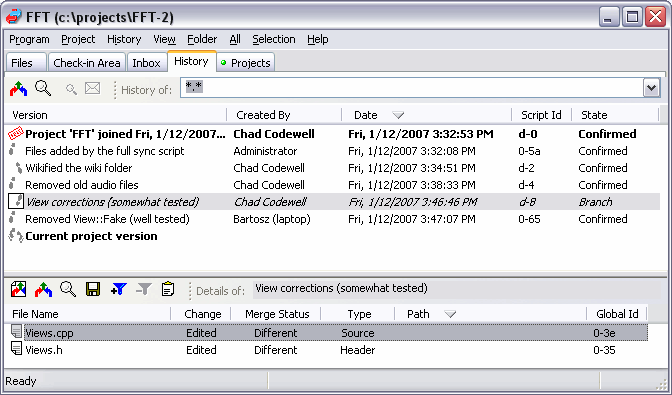

Local Merge
When two project members perform a check-in at the same time and their sripts miss each other, one of the check-ins becomes a side branch (Code Co-op arbitrarily favors the check-in done by a member with numerically lower ID—this one extends the trunk). You can see side branches in the history of the project—they are displayed in greyed-out italics with the State set to "Branch".
A side branch has to be merged back into the trunk—most often by the creator of the branched scripts, but not necessarily.
Merging a Branch from within the History Tab
- Select a branch script in the History (here, the script "View Corrections"). If you have multiple scripts in the branch, start with the earliest one and repeat the procedure for each in turn.
- The details pane at the bottom will list the files affected by the selected script and their Merge Status. Sometimes the files in the branch and in the trunk are Identical—usually when somebody has already performed the merge, and there haven't been any further modifications done in the trunk. In that case do nothing.

- Double-click a file to review the differences (here, the file "View.cpp".
- Select a file and click the Merge branch file(s) button
 (or the Automatically merge branch file(s) button
(or the Automatically merge branch file(s) button )
)
- Depending on the type of merge you may see:
- Attribute merge dialog asking you about the choice of path, file name, or file type. This is done only when the two merged versions differ in one of these attributes.
- An external merger displaying changes done in the branch, vs. the changes done in the trunk (if any), and the proposed merge result. Accept and save the merge result.
- A confirmation dialog asking whether to add or delete the file in question (if that was the action in the rejected script).
Branch Merge View
Alternately, you can select the script you wish to Merge and then click the Open Branch Merge View button in the top toolbar. This will open the Branch Merge Tab and provide you with more detailed information prior to performing the merge. For example, in the details pane where the affected files are listed, you will see if a file has been moved or renamed.
Additional Options
While reviewing the files to be merged in the details pane, you can also do the following:
 Click this button to view the source branch changes.
Click this button to view the source branch changes. To filter the history to a particular file or files, use this Filter History by selected files button. The upper pane display will change--it will only show the scripts that modify this particular file or files.
To filter the history to a particular file or files, use this Filter History by selected files button. The upper pane display will change--it will only show the scripts that modify this particular file or files.- Click the Save version of file(s) button to save the version of the files as created by the branch.